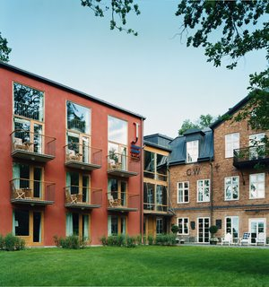
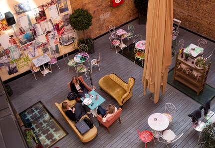

Travelling to Stockholm
By Airplane
Stockholm is served by several airports, but the biggest and best is Arlanda to the north. Several large airlines, including SAS and Finnair who have good routes to Asia, traffic Arlanda from many locations in the world. There are direct flights from some destinations, but most intercontinental flights will connect through European hubs like London and Copenhagen.
To go from Arlanda to central Stockholm you can take the Arlanda Express train, or the Flygbussarna airport coaches.
Some airlines also have flights from European locations to the smaller airports Bromma and Skavsta. The latter is trafficked by the budget airline Ryan Air.
Please let us know if you want some help in finding the cheapest and best tickets.
By Car
Car is a great way to see Sweden, its endless forests close to Stockholm and rolling plains in the south. To get from mainland Europe to Sweden you will have to pass the Öresundsbron bridge that connects Copenhagen in Denmark and Malmö in Sweden. Please ask us if you want tips on where to stay along the road in Sweden. The trip from Malmö to Stockholm takes around 7 hours of continuous driving.
By Train
Stockholm Central Station is the largest train station in Sweden and a connecting hub for many local trains, Arlanda Express and subway. But to be frank, Sweden’s inter city rail network is a joke - with frequent delays and expensive prices. Unless you are travelling from Smallville, Sweden, you are better off taking an airplane or driving.
Staying in Stockholm
Here are a few of the hotels and booking sites we recommend. We will gladly help you find a good hotel to stay at. Just ping us and we’ll spring into action. If you need any help to book, or to find somewhere else to stay, please let us know and we’ll help out.
Hotels
- Hotel J ☆☆☆☆
-

This is where iParty will take place. It’s located about 15 minutes by cab from Stockholm, has American inspired rooms and a beautiful view of the archipelago inlet to Stockholm.
- Story Hotel ☆☆☆☆
-

Kim and Miwa are staying here between Thursday and Monday. A weird place with great art, located in central Stockholm close to hip Stureplan.
- Nobis Hotel ☆☆☆☆☆
-
Luxurious and cool hotel on one of the most expensive streets in Stockholm, close to Story Hotel.
- Lord Nelson ☆☆☆
-
Quaint mid range hotel in Gamla Stan, the old parts of the city.
- Lady Hamilton ☆☆☆☆
-
- Victory Hotel ☆☆☆☆
-
- Freys Hotel ☆☆☆☆
-
- Lilla Radmannen ☆☆☆
-
- Hotel Bakfickan ☆☆
-
- Hotel Rival ☆☆☆☆
-
- Mornington Hotel ☆☆☆☆
-
- Hotel Hellstens ☆☆☆
-
- Courtyard Stockholm ☆☆☆☆
-
- Best Western Premier Hotell Kung Carl ☆☆☆☆
-